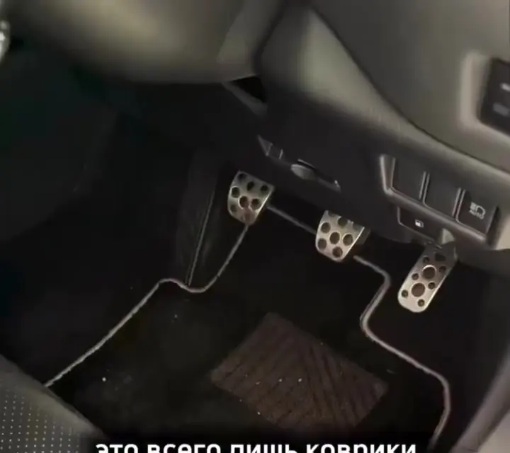
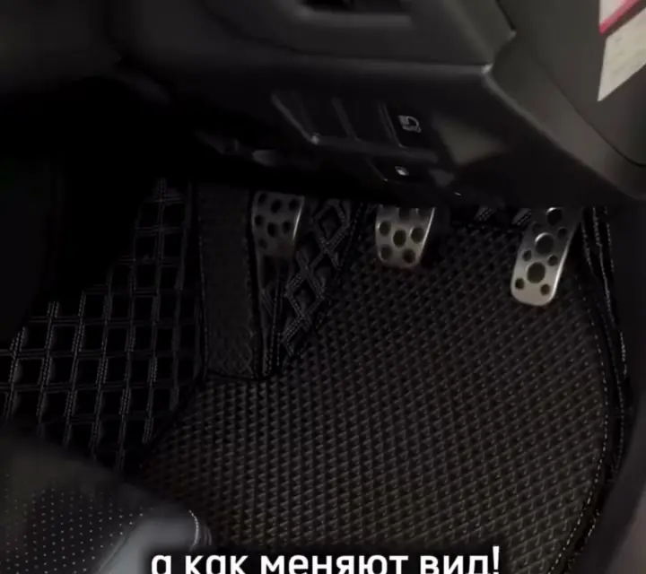
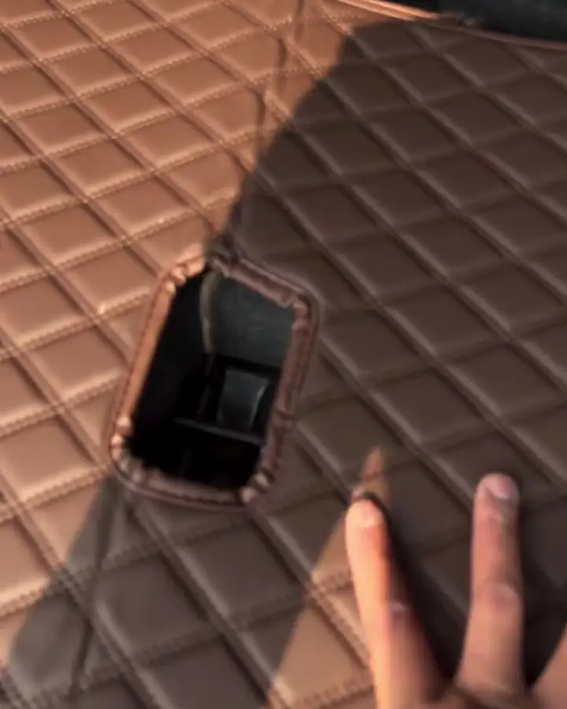
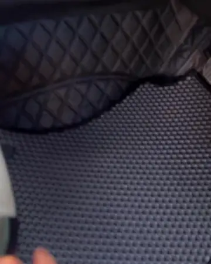
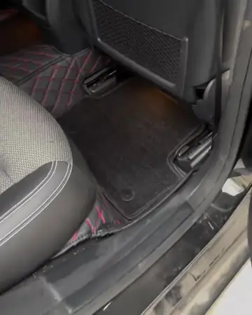
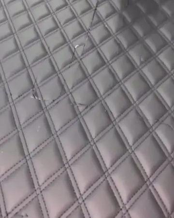
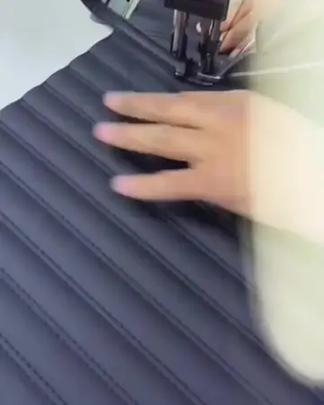
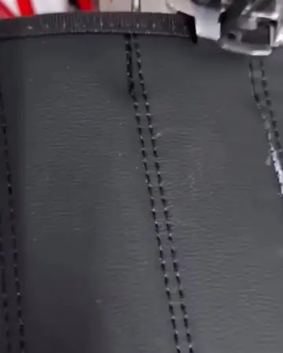

−30%
Салон, 2 ряда
9 000 ₽
На любое авто — седан, кроссовер, минивэн, праворульные модели.
- Пошив по лекалам вашей модели
- Борта на пороги и тоннель
- Подпятник под педали
Свой цех на Дежнёва, 30. Экокожа и кожа Nappa, борта на пороги и тоннель — салон выглядит как новый, а снег и реагенты остаются на коврике.
9 000 ₽
На любое авто — седан, кроссовер, минивэн, праворульные модели.
4 000 ₽
5D-коврик в багажник с бортами: закрывает пол и стенки, держит песок, лыжи и закупки с рынка.
Добавить багажникот 14 000 ₽
Для Prado, Noah, Sienta, Isis, Alphard и других семиместных авто.
Рассчитать 3 рядаОрганайзер и ароматизатор — в подарок к каждому комплекту
Рассрочка 0% — без первоначального взноса и переплат, на 5D-коврики и TPE полики
Доставка по России — СДЭК и другие транспортные компании
Штатный ворс за пару якутских зим превращается в серую тряпку: соль, песок, талая вода. Многие недооценивают коврики — пока не увидят разницу. Потяните шов на фото и сравните.


Было Стало
Экокожа «ромб», кожа Nappa, любой цвет кожи и нити. Шьём в своём цеху в Якутске — без посредников и ожидания из других городов.

Соты держат воду и снег, легко вытряхиваются. В наличии и на заказ.

Органайзеры, ароматизаторы, LED-лампы и аксессуары для салона.
Летом — прохлада и приватность, на проверке — снимается за минуту. Подберём под ваши стёкла.
Узнать цену →Чёрная экокожа · красная нить · ромб
Выберите цвет кожи и нити — отправим этот вариант мастеру вместе с маркой авто, и он посчитает цену.
Посчитать этот вариантЦех MY CAR: раскрой, строчка, окантовка
Берём плотную экокожу и полимерные основы, устойчивые к морозу, влаге и реагентам.
Шаблон под вашу модель, точный раскрой на станке — минимум отходов, максимум посадки.
Специальные нити и техника строчки дают прочный шов, который не распустится через сезон.
Обрезаем края, укрепляем швы, ставим быстросъёмные кнопки и подпятник.
Проверяем каждый шов, размеры и внешний вид до того, как отдать вам.
Ставим в Якутске на месте или упаковываем и отправляем СДЭК в ваш город.



Нажмите на карточку — откроется видео. Вашей модели нет? Значит, она будет следующей.
Больше реальных работ и отзывов — в Instagram @my.car_ykt
Два ряда — 9 000 ₽ по акции −30%, багажник — 4 000 ₽, три ряда с багажником — от 14 000 ₽. Органайзер и ароматизатор — в подарок. Точную цену на вашу модель назовём за пару минут в WhatsApp.
Шьём под конкретную марку, модель и год: Toyota, Lexus, Subaru, Mercedes-Benz, Haval, Honda, Nissan, Mitsubishi, Mazda и другие — в том числе праворульные «японцы». Напишите марку и модель — подтвердим лекало.
5D-коврик закрывает весь пол и поднимается бортами на пороги и тоннель — штатный ковролин остаётся сухим. Верх из экокожи или кожи Nappa моется влажной тряпкой. EVA и TPE полики можно положить сверху: соты держат снег и воду.
Популярные модели есть в наличии, остальное шьём на заказ в своём цеху. Срок зависит от загрузки — уточним при расчёте.
Да, на 5D-коврики и TPE полики — рассрочка без первоначального взноса и без переплат.
Да, по всей России — СДЭК и другие транспортные компании. В Якутске забирайте в офисе: ул. Дежнёва, 30, 1 этаж, офис 6.